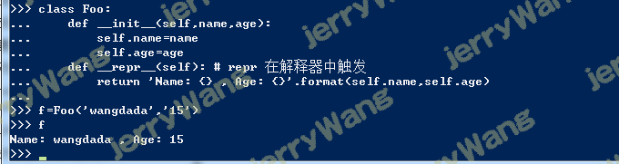
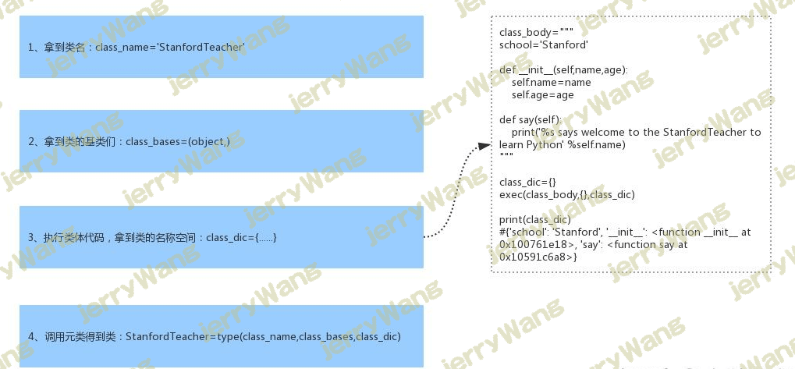
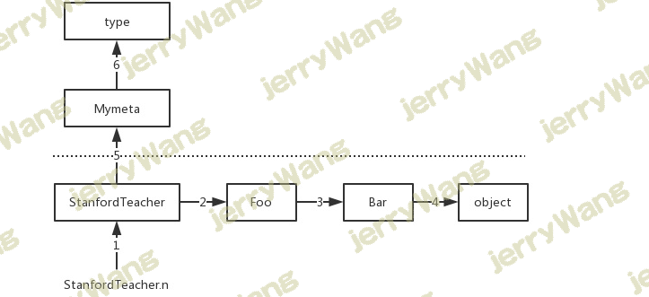
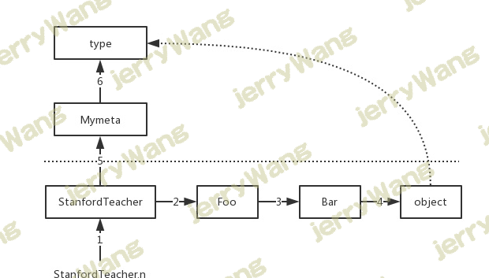

isinstance(obj,cls)和issubclass(sub,super) 1 2 3 4 5 6 7 8 9 10 11 12 13 class Foo (): pass obj=Foo() isinstance (obj,Foo) class Foo (): pass class Bar (Foo ): pass obj=Foo() issubclass (Bar,Foo)
__setattr__,__delattr__,__getattr__1 2 3 4 5 6 7 8 9 10 11 12 13 14 15 16 17 18 19 20 21 22 23 24 25 26 27 28 29 30 31 32 33 34 35 36 37 38 39 40 41 42 class Foo : x=1 def __init__ (self,y ): self.y=y def __getattr__ (self, item ): ''' 对象取值时，取值的顺序为：先从object里__getattribute__中找，第二步从对象的属性中找，第三步从当前类中找，第四步从父类中找，第五步从__getattr__中找，如果没有，直接抛出异常。 ''' print ('----> from getattr:你找的属性不存在' ) def __setattr__ (self, key, value ): print ('----> from setattr' ) self.__dict__[key]=value def __delattr__ (self, item ): print ('----> from delattr' ) self.__dict__.pop(item) f1=Foo(10 ) print (f1.__dict__) f1.z=3 print (f1.__dict__)del f1.zprint (f1.__dict__)f1.zxxx ----> from setattr {'y' : 10 } ----> from setattr {'y' : 10 , 'z' : 3 } ----> from delattr {'y' : 10 } ----> from getattr :你找的属性不存在
二次加工标准类型(包装) 包装：python为大家提供了标准数据类型，以及丰富的内置方法，其实在很多场景下我们都需要基于标准数据类型来定制我们自己的数据类型，新增/改写方法，这就用到了我们刚学的继承/派生知识（其他的标准类型均可以通过下面的方式进行二次加工）
1 2 3 4 5 6 7 8 9 10 11 12 13 14 15 16 17 18 19 20 21 22 23 class List (list ): def append (self,name ): '派生自己append，加上类型检查' if type (name) is str : super ().append(name) else : print ('非字符串' ) @property def mid (self ): '新增自己的属性' count=len (self)//2 return self[count] l=List ('helloword' ) print (l.mid)l.append('allen' ) print (l)o ['h' , 'e' , 'l' , 'l' , 'o' , 'w' , 'o' , 'r' , 'd' , 'allen' ]
授权：授权是包装的一个特性, 包装一个类型通常是对已存在的类型的一些定制,这种做法可以新建,修改或删除原有产品的功能。其它的则保持原样。授权的过程,即是所有更新的功能都是由新类的某部分来处理,但已存在的功能就授权给对象的默认属性。
实现授权的关键点就是覆盖__getattr__方法
基于继承实现
1 2 3 4 5 6 7 8 9 10 11 12 13 14 15 16 17 18 19 20 21 22 23 24 25 26 class List (list ): def append (self, p_object ): ' 派生自己的append：加上类型检查' if not isinstance (p_object,int ): raise TypeError('must be int' ) super ().append(p_object) @property def mid (self ): '新增自己的属性' index=len (self)//2 return self[index] l=List ([1 ,2 ,3 ,4 ]) print (l)l.append(5 ) print (l)print (l.mid)l.insert(0 ,-123 ) print (l)l.clear() print (l)
练习（clear加权限限制）
1 2 3 4 5 6 7 8 9 10 11 12 13 14 15 16 17 18 19 20 21 22 23 24 class List (list ): def __init__ (self,item,tag=False ): super ().__init__(item) self.tag=tag def append (self, p_object ): if not isinstance (p_object,str ): raise TypeError super ().append(p_object) def clear (self ): if not self.tag: raise PermissionError super ().clear() l=List ([1 ,2 ,3 ],False ) print (l)print (l.tag)l.append('saf' ) print (l)l.tag=True l.clear()
授权示范一
1 2 3 4 5 6 7 8 9 10 11 12 13 14 15 16 import timeclass FileHandle : def __init__ (self,filename,mode='r' ,encoding='utf-8' ): self.file=open (filename,mode,encoding=encoding) def write (self,line ): t=time.strftime('%Y-%m-%d %T' ) self.file.write('%s %s' %(t,line)) def __getattr__ (self, item ): return getattr (self.file,item) f1=FileHandle('b.txt' ,'w+' ) f1.write('你好啊' ) f1.seek(0 ) print (f1.read())f1.close()
授权示范二
1 2 3 4 5 6 7 8 9 10 11 12 13 14 15 16 17 18 19 20 21 22 23 24 25 26 27 28 29 30 31 32 33 34 __author__ = 'Linhaifeng' import timeclass FileHandle : def __init__ (self,filename,mode='r' ,encoding='utf-8' ): if 'b' in mode: self.file=open (filename,mode) else : self.file=open (filename,mode,encoding=encoding) self.filename=filename self.mode=mode self.encoding=encoding def write (self,line ): if 'b' in self.mode: if not isinstance (line,bytes ): raise TypeError('must be bytes' ) self.file.write(line) def __getattr__ (self, item ): return getattr (self.file,item) def __str__ (self ): if 'b' in self.mode: res="<_io.BufferedReader name='%s'>" %self.filename else : res="<_io.TextIOWrapper name='%s' mode='%s' encoding='%s'>" %(self.filename,self.mode,self.encoding) return res f1=FileHandle('b.txt' ,'wb' ) f1.write('你好啊' .encode('utf-8' )) print (f1)f1.close()
练习授权
1 2 3 4 5 6 7 8 9 10 11 12 13 14 15 16 17 18 19 20 21 22 23 24 25 26 27 28 29 30 31 32 33 34 35 36 37 38 39 40 41 42 43 44 45 46 47 48 49 50 51 52 53 54 55 56 57 58 59 60 61 62 63 64 65 66 class List : def __init__ (self,seq ): self.seq=seq def append (self, p_object ): ' 派生自己的append加上类型检查，覆盖原有的append' if not isinstance (p_object,int ): raise TypeError('must be int' ) self.seq.append(p_object) @property def mid (self ): '新增自己的方法' index=len (self.seq)//2 return self.seq[index] def __getattr__ (self, item ): return getattr (self.seq,item) def __str__ (self ): return str (self.seq) l=List ([1 ,2 ,3 ]) print (l)l.append(4 ) print (l)print (l.mid)l.insert(0 ,-123 ) print (l)class List : def __init__ (self,seq,permission=False ): self.seq=seq self.permission=permission def clear (self ): if not self.permission: raise PermissionError('not allow the operation' ) self.seq.clear() def __getattr__ (self, item ): return getattr (self.seq,item) def __str__ (self ): return str (self.seq) l=List ([1 ,2 ,3 ]) l.permission=True print (l)l.clear() print (l)l.insert(0 ,-123 ) print (l)
__getattribute__1 2 3 4 5 6 7 8 9 10 11 12 13 14 15 16 17 18 19 __author__ = 'wangdada' class Foo : def __init__ (self,x ): self.x=x def __getattr__ (self, item ): print ('不存在,执行的是我' ) def __getattribute__ (self, item ): print ('不管是否存在,我都会执行' ) raise AttributeError('哈哈' ) f1=Foo(10 ) f1.x f1.xxxxxx
描述符(__get__,__set__,__delete__) 1 描述符是什么:描述符本质就是一个新式类,在这个新式类中,至少实现了get (),set (),delete ()中的一个,这也被称为描述符协议
get ():调用一个属性时,触发set ():为一个属性赋值时,触发delete ():采用del删除属性时,触发
1 2 3 4 5 6 7 8 class Foo : def __get__ (self, instance, owner ): pass def __set__ (self, instance, value ): pass def __delete__ (self, instance ): pass
2 描述符是干什么的:描述符的作用是用来代理另外一个类的属性的(必须把描述符定义成这个类的类属性，不能定义到构造函数中)
引子:描述符类产生的实例进行属性操作并不会触发三个方法的执行
1 2 3 4 5 6 7 8 9 10 11 12 13 14 class Foo : def __get__ (self, instance, owner ): print ('触发get' ) def __set__ (self, instance, value ): print ('触发set' ) def __delete__ (self, instance ): print ('触发delete' ) f1=Foo() f1.name='allen' f1.name del f1.name
1 2 3 4 5 6 7 8 9 10 11 12 13 14 15 16 17 18 19 20 21 22 23 24 25 26 27 28 29 30 31 32 33 34 35 36 37 38 39 40 41 42 43 44 45 46 47 48 49 class Str : def __get__ (self, instance, owner ): print ('Str调用' ) def __set__ (self, instance, value ): print ('Str设置...' ) def __delete__ (self, instance ): print ('Str删除...' ) class Int : def __get__ (self, instance, owner ): print ('Int调用' ) def __set__ (self, instance, value ): print ('Int设置...' ) def __delete__ (self, instance ): print ('Int删除...' ) class People : name=Str() age=Int() def __init__ (self,name,age ): self.name=name self.age=age p1=People('alex' ,18 ) p1.name p1.name='allen' del p1.namep1.age p1.age=18 del p1.ageprint (p1.__dict__)print (People.__dict__)print (type (p1) == People) print (type (p1).__dict__ == People.__dict__)
3 描述符分两种__get__()和__set__()
1 2 3 4 5 class Foo : def __set__ (self, instance, value ): print ('set' ) def __get__ (self, instance, owner ): print ('get' )
二 非数据描述符:没有实现set ()
1 2 3 class Foo : def __get__ (self, instance, owner ): print ('get' )
4 注意事项:__getattr__()
类属性>数据描述符 1 2 3 4 5 6 7 8 9 10 11 12 13 14 15 16 17 18 19 20 21 22 23 24 25 26 27 28 29 30 31 32 class Str : def __get__ (self, instance, owner ): print ('Str调用' ) def __set__ (self, instance, value ): print ('Str设置...' ) def __delete__ (self, instance ): print ('Str删除...' ) class People : name=Str() def __init__ (self,name,age ): self.name=name self.age=age People.name People.name='allen' del People.name ''' 原因:描述符在使用时被定义成另外一个类的类属性,因而类属性比二次加工的描述符伪装而来的类属性有更高的优先级 People.name #恩,调用类属性name,找不到就去找描述符伪装的类属性name,触发了__get__() People.name='allen' #那赋值呢,直接赋值了一个类属性,它拥有更高的优先级,相当于覆盖了描述符,肯定不会触发描述符的__set__() del People.name #同上 '''
数据描述符>实例属性 1 2 3 4 5 6 7 8 9 10 11 12 13 14 15 16 17 18 19 20 21 22 23 class Str : def __get__ (self, instance, owner ): print ('Str调用' ) def __set__ (self, instance, value ): print ('Str设置...' ) def __delete__ (self, instance ): print ('Str删除...' ) class People : name=Str() def __init__ (self,name,age ): self.name=name self.age=age p1=People('allen' ,18 ) p1.name='allennnnnn' p1.name print (p1.__dict__)del p1.name
实例属性>非数据描述符 1 2 3 4 5 6 7 8 9 10 11 12 13 14 15 16 17 18 19 20 21 class Foo : def func (self ): print ('我胡汉三又回来了' ) f1=Foo() f1.func() print (dir (Foo.func))print (hasattr (Foo.func,'__set__' ))print (hasattr (Foo.func,'__get__' ))print (hasattr (Foo.func,'__delete__' ))f1.func='这是实例属性啊' print (f1.func)del f1.func f1.func()
再次验证：实例属性>非数据描述符 1 2 3 4 5 6 7 8 9 10 11 12 13 14 15 16 17 18 19 20 21 22 23 24 25 26 27 28 29 30 31 32 33 34 35 36 37 class Foo : def __set__ (self, instance, value ): print ('set' ) def __get__ (self, instance, owner ): print ('get' ) class Room : name=Foo() def __init__ (self,name,width,length ): self.name=name self.width=width self.length=length r1=Room('厕所' ,1 ,1 ) r1.name r1.name='厨房' class Foo : def __get__ (self, instance, owner ): print ('get' ) class Room : name=Foo() def __init__ (self,name,width,length ): self.name=name self.width=width self.length=length r1=Room('厕所' ,1 ,1 ) r1.name r1.name='厨房'
非数据描述符>找不到 1 2 3 4 5 6 7 8 9 class Foo : def func (self ): print ('我胡汉三又回来了' ) def __getattr__ (self, item ): print ('找不到了当然是来找我啦' ,item) f1=Foo() f1.xxxxxxxxxxx
5 描述符使用
众所周知，python是弱类型语言，即参数的赋值没有类型限制，下面我们通过描述符机制来实现类型限制功能
牛刀小试 1 2 3 4 5 6 7 8 9 10 11 12 13 14 15 16 17 18 19 20 21 22 23 24 25 26 27 28 29 30 31 32 33 34 35 36 37 class Str : def __init__ (self,name ): self.name=name def __get__ (self, instance, owner ): print ('get--->' ,instance,owner) return instance.__dict__[self.name] def __set__ (self, instance, value ): print ('set--->' ,instance,value) instance.__dict__[self.name]=value def __delete__ (self, instance ): print ('delete--->' ,instance) instance.__dict__.pop(self.name) class People : name=Str('name' ) def __init__ (self,name,age,salary ): self.name=name self.age=age self.salary=salary p1=People('allen' ,18 ,3231.3 ) print (p1.__dict__)p1.name print (p1.__dict__)p1.name='allenlin' print (p1.__dict__)print (p1.__dict__)del p1.nameprint (p1.__dict__)
拔刀相助 1 2 3 4 5 6 7 8 9 10 11 12 13 14 15 16 17 18 19 20 21 22 23 24 25 26 27 28 29 30 31 32 33 34 35 36 37 38 39 40 41 42 43 44 45 46 47 48 49 50 class Str : def __init__ (self,name ): self.name=name def __get__ (self, instance, owner ): print ('get--->' ,instance,owner) return instance.__dict__[self.name] def __set__ (self, instance, value ): print ('set--->' ,instance,value) instance.__dict__[self.name]=value def __delete__ (self, instance ): print ('delete--->' ,instance) instance.__dict__.pop(self.name) class People : name=Str('name' ) def __init__ (self,name,age,salary ): self.name=name self.age=age self.salary=salary People.name class Str : def __init__ (self,name ): self.name=name def __get__ (self, instance, owner ): print ('get--->' ,instance,owner) if instance is None : return self return instance.__dict__[self.name] def __set__ (self, instance, value ): print ('set--->' ,instance,value) instance.__dict__[self.name]=value def __delete__ (self, instance ): print ('delete--->' ,instance) instance.__dict__.pop(self.name) class People : name=Str('name' ) def __init__ (self,name,age,salary ): self.name=name self.age=age self.salary=salary print (People.name)
拔刀霍霍 1 2 3 4 5 6 7 8 9 10 11 12 13 14 15 16 17 18 19 20 21 22 23 24 25 26 27 28 class Str : def __init__ (self,name,expected_type ): self.name=name self.expected_type=expected_type def __get__ (self, instance, owner ): print ('get--->' ,instance,owner) if instance is None : return self return instance.__dict__[self.name] def __set__ (self, instance, value ): print ('set--->' ,instance,value) if not isinstance (value,self.expected_type): raise TypeError('Expected %s' %str (self.expected_type)) instance.__dict__[self.name]=value def __delete__ (self, instance ): print ('delete--->' ,instance) instance.__dict__.pop(self.name) class People : name=Str('name' ,str ) def __init__ (self,name,age,salary ): self.name=name self.age=age self.salary=salary p1=People(123 ,18 ,3333.3 )
大刀阔福 1 2 3 4 5 6 7 8 9 10 11 12 13 14 15 16 17 18 19 20 21 22 23 24 25 26 27 28 29 30 31 32 class Typed : def __init__ (self,name,expected_type ): self.name=name self.expected_type=expected_type def __get__ (self, instance, owner ): print ('get--->' ,instance,owner) if instance is None : return self return instance.__dict__[self.name] def __set__ (self, instance, value ): print ('set--->' ,instance,value) if not isinstance (value,self.expected_type): raise TypeError('Expected %s' %str (self.expected_type)) instance.__dict__[self.name]=value def __delete__ (self, instance ): print ('delete--->' ,instance) instance.__dict__.pop(self.name) class People : name=Typed('name' ,str ) age=Typed('name' ,int ) salary=Typed('name' ,float ) def __init__ (self,name,age,salary ): self.name=name self.age=age self.salary=salary p1=People(123 ,18 ,3333.3 ) p1=People('allen' ,'18' ,3333.3 ) p1=People('allen' ,18 ,3333 )
大刀阔斧之后我们已然能实现功能了，但是问题是，如果我们的类有很多属性，你仍然采用在定义一堆类属性的方式去实现，low，这时候我需要教你一招：独孤九剑
类的装饰器:无参 1 2 3 4 5 6 7 8 9 10 11 12 def decorate (cls ): print ('类的装饰器开始运行啦------>' ) return cls @decorate class People : def __init__ (self,name,age,salary ): self.name=name self.age=age self.salary=salary p1=People('allen' ,18 ,3333.3 )
类的装饰器:有参 1 2 3 4 5 6 7 8 9 10 11 12 13 def typeassert (**kwargs ): def decorate (cls ): print ('类的装饰器开始运行啦------>' ,kwargs) return cls return decorate @typeassert(name=str ,age=int ,salary=float ) class People : def __init__ (self,name,age,salary ): self.name=name self.age=age self.salary=salary p1=People('allen' ,18 ,3333.3 )
刀光剑影 1 2 3 4 5 6 7 8 9 10 11 12 13 14 15 16 17 18 19 20 21 22 23 24 25 26 27 28 29 30 31 32 33 34 35 class Typed : def __init__ (self,name,expected_type ): self.name=name self.expected_type=expected_type def __get__ (self, instance, owner ): print ('get--->' ,instance,owner) if instance is None : return self return instance.__dict__[self.name] def __set__ (self, instance, value ): print ('set--->' ,instance,value) if not isinstance (value,self.expected_type): raise TypeError('Expected %s' %str (self.expected_type)) instance.__dict__[self.name]=value def __delete__ (self, instance ): print ('delete--->' ,instance) instance.__dict__.pop(self.name) def typeassert (**kwargs ): def decorate (cls ): print ('类的装饰器开始运行啦------>' ,kwargs) for name,expected_type in kwargs.items(): setattr (cls,name,Typed(name,expected_type)) return cls return decorate @typeassert(name=str ,age=int ,salary=float ) class People : def __init__ (self,name,age,salary ): self.name=name self.age=age self.salary=salary print (People.__dict__)p1=People('allen' ,18 ,3333.3 )
6 描述符总结
描述符是可以实现大部分python类特性中的底层魔法,包括@classmethod,@staticmethd,@property甚至是__slots__属性
描述父是很多高级库和框架的重要工具之一,描述符通常是使用到装饰器或者元类的大型框架中的一个组件.
7 利用描述符原理完成一个自定制@property,实现延迟计算（本质就是把一个函数属性利用装饰器原理做成一个描述符：类的属性字典中函数名为key，value为描述符类产生的对象）
@property回顾 1 2 3 4 5 6 7 8 9 10 11 12 class Room : def __init__ (self,name,width,length ): self.name=name self.width=width self.length=length @property def area (self ): return self.width * self.length r1=Room('alex' ,1 ,1 ) print (r1.area)
自己做一个@property 1 2 3 4 5 6 7 8 9 10 11 12 13 14 15 16 17 18 19 20 21 class Lazyproperty : def __init__ (self,func ): self.func=func def __get__ (self, instance, owner ): print ('这是我们自己定制的静态属性,r1.area实际是要执行r1.area()' ) if instance is None : return self return self.func(instance) class Room : def __init__ (self,name,width,length ): self.name=name self.width=width self.length=length @Lazyproperty def area (self ): return self.width * self.length r1=Room('alex' ,1 ,1 ) print (r1.area)
实现延迟计算功能 1 2 3 4 5 6 7 8 9 10 11 12 13 14 15 16 17 18 19 20 21 22 23 24 25 26 class Lazyproperty : def __init__ (self,func ): self.func=func def __get__ (self, instance, owner ): print ('这是我们自己定制的静态属性,r1.area实际是要执行r1.area()' ) if instance is None : return self else : print ('--->' ) value=self.func(instance) setattr (instance,self.func.__name__,value) return value class Room : def __init__ (self,name,width,length ): self.name=name self.width=width self.length=length @Lazyproperty def area (self ): return self.width * self.length r1=Room('alex' ,111 ,111 ) print (r1.area) print (r1.area)
一个小的改动，延迟计算的美梦就破碎了 1 2 3 4 5 6 7 8 9 10 11 12 13 14 15 16 17 18 19 20 21 22 23 24 25 26 27 28 29 30 31 32 33 class Lazyproperty : def __init__ (self,func ): self.func=func def __get__ (self, instance, owner ): print ('这是我们自己定制的静态属性,r1.area实际是要执行r1.area()' ) if instance is None : return self else : value=self.func(instance) instance.__dict__[self.func.__name__]=value return value def __set__ (self, instance, value ): print ('hahahahahah' ) class Room : def __init__ (self,name,width,length ): self.name=name self.width=width self.length=length @Lazyproperty def area (self ): return self.width * self.length print (Room.__dict__)r1=Room('alex' ,1 ,1 ) print (r1.area)print (r1.area) print (r1.area) print (r1.area)
8 利用描述符原理完成一个自定制@classmethod
自己做一个@classmethod 1 2 3 4 5 6 7 8 9 10 11 12 13 14 15 16 17 18 19 20 21 22 23 24 25 26 27 28 29 30 31 32 33 34 35 36 37 38 39 40 41 42 class ClassMethod : def __init__ (self,func ): self.func=func def __get__ (self, instance, owner ): def feedback (): print ('在这里可以加功能啊...' ) return self.func(owner) return feedback class People : name='linhaifeng' @ClassMethod def say_hi (cls ): print ('你好啊,帅哥 %s' %cls.name) People.say_hi() p1=People() p1.say_hi() class ClassMethod : def __init__ (self,func ): self.func=func def __get__ (self, instance, owner ): def feedback (*args,**kwargs ): print ('在这里可以加功能啊...' ) return self.func(owner,*args,**kwargs) return feedback class People : name='linhaifeng' @ClassMethod def say_hi (cls,msg ): print ('你好啊,帅哥 %s %s' %(cls.name,msg)) People.say_hi('你是那偷心的贼' ) p1=People() p1.say_hi('你是那偷心的贼' )
9 利用描述符原理完成一个自定制的@staticmethod
自己做一个@staticmethod 1 2 3 4 5 6 7 8 9 10 11 12 13 14 15 16 17 18 19 class StaticMethod : def __init__ (self,func ): self.func=func def __get__ (self, instance, owner ): def feedback (*args,**kwargs ): print ('在这里可以加功能啊...' ) return self.func(*args,**kwargs) return feedback class People : @StaticMethod def say_hi (x,y,z ): print ('------>' ,x,y,z) People.say_hi(1 ,2 ,3 ) p1=People() p1.say_hi(4 ,5 ,6 )
再看property 一个静态属性property本质就是实现了get，set，delete三种方法
用法一 1 2 3 4 5 6 7 8 9 10 11 12 13 14 15 16 17 18 class Foo : @property def AAA (self ): print ('get的时候运行我啊' ) @AAA.setter def AAA (self,value ): print ('set的时候运行我啊' ) @AAA.deleter def AAA (self ): print ('delete的时候运行我啊' ) f1=Foo() f1.AAA f1.AAA='aaa' del f1.AAA
用法二 1 2 3 4 5 6 7 8 9 10 11 12 13 14 15 class Foo : def get_AAA (self ): print ('get的时候运行我啊' ) def set_AAA (self,value ): print ('set的时候运行我啊' ) def delete_AAA (self ): print ('delete的时候运行我啊' ) AAA=property (get_AAA,set_AAA,delete_AAA) f1=Foo() f1.AAA f1.AAA='aaa' del f1.AAA
怎么用
案例一 1 2 3 4 5 6 7 8 9 10 11 12 13 14 15 16 17 18 19 20 21 22 23 24 25 26 27 28 class Goods : def __init__ (self ): self.original_price = 100 self.discount = 0.8 @property def price (self ): new_price = self.original_price * self.discount return new_price @price.setter def price (self, value ): self.original_price = value @price.deleter def price (self ): del self.original_price obj = Goods() obj.price obj.price = 200 print (obj.price)del obj.price
案例二 1 2 3 4 5 6 7 8 9 10 11 12 13 14 15 16 17 18 19 20 21 22 23 24 25 26 27 28 29 30 31 32 33 34 35 36 37 38 39 40 41 42 43 44 45 46 47 48 49 50 51 52 53 54 55 56 57 58 59 60 61 62 63 64 65 66 67 68 69 70 71 72 73 74 class People : def __init__ (self,name ): self.name=name @property def name (self ): return self.name class People : def __init__ (self,name ): self.name=name @property def name (self ): print ('get------>' ) return self.DouNiWan @name.setter def name (self,value ): print ('set------>' ) self.DouNiWan=value @name.deleter def name (self ): print ('delete------>' ) del self.DouNiWan p1=People('alex' ) print (p1.name)print (p1.name)print (p1.name)print (p1.__dict__)p1.name='allen' print (p1.__dict__)del p1.nameprint (p1.__dict__)class People : def __init__ (self,name ): self.name=name @property def name (self ): print ('get------>' ) return self.DouNiWan @name.setter def name (self,value ): print ('set------>' ) if not isinstance (value,str ): raise TypeError('必须是字符串类型' ) self.DouNiWan=value @name.deleter def name (self ): print ('delete------>' ) del self.DouNiWan p1=People('alex' ) p1.name=1
__setitem__,__getitem__,__delitem__1 2 3 4 5 6 7 8 9 10 11 12 13 14 15 16 17 18 19 20 21 class qqq : def __getitem__ (self, item ): print ('getitem' ,item) def __setitem__ (self, key, value ): print ('setitem' ) self.__dict__[key]=value def __delitem__ (self, key ): self.__dict__.pop(key) print ('delitem' ) q=qqq() q['name' ]='wangdada' q['name' ] q['qqq' ] print (q.__dict__) del q['name' ] print (q.__dict__)
改变对象的字符串显示__str__,__repr__
自定制格式化字符串__format__
1 2 3 4 str函数或者print函数--->obj.__str__() repr或者交互式解释器--->obj.__repr__() 如果__str__没有被定义,那么就会使用__repr__来代替输出 注意:这俩方法的返回值必须是字符串,否则抛出异常
1 2 3 4 5 6 7 8 9 10 11 12 13 14 15 16 17 18 19 20 21 22 23 24 25 26 27 class Foo : def __init__ (self,name,age ): self.name=name self.age=age def __str__ (self ): return '这是str' def __repr__ (self ): return 'Name: {} , Age: {}' .format (self.name,self.age) f=Foo('wangdada' ,'15' ) print (f) class Foo : def __init__ (self,name,age ): self.name=name self.age=age def __repr__ (self ): return 'Name: {} , Age: {}' .format (self.name,self.age) f=Foo('wangdada' ,'15' ) print (f)
repr 在解释器中触发

format
1 2 3 4 5 6 7 8 9 10 11 12 13 14 15 16 17 18 19 20 21 22 23 24 25 26 27 28 29 30 31 32 33 34 35 36 37 date_dict={ 'ymd' :'{0.year}{0.month}{0.day}' , 'y:m:d' :'{0.year}:{0.month}:{0.day}' , 'm-d-y' :'{0.month}-{0.day}-{0.year}' , } class Date : def __init__ (self,year,month,day ): self.year=year self.month=month self.day=day def __format__ (self, format_spec ): print ('执行format' ) if format_spec not in date_dict.keys(): '''传过来的值不在字典里则执行''' fm = date_dict['m-d-y' ] return fm.format (self) fm=date_dict[format_spec] return fm.format (self) d=Date(2020 ,3 ,16 ) f1=format (d,'ymd' ) f2=format (d,'y:m:d' ) f3=format (d,'m-d-y' ) f4=format (d,'mdd-y' ) print (f1,f2,f3)print (f4)执行format 执行format 执行format 执行format 2020316 2020 :3 :16 3 -16 -2020 3 -16 -2020
__slots__1 2 3 4 5 6 7 8 9 10 11 12 13 14 15 16 17 18 19 20 21 22 23 24 25 26 27 28 29 30 31 32 33 34 35 36 37 38 39 40 41 42 43 44 ''' 1.__slots__是什么:是一个类变量,变量值可以是列表,元祖,或者可迭代对象,也可以是一个字符串(意味着所有实例只有一个数据属性) 2.引子:使用点来访问属性本质就是在访问类或者对象的__dict__属性字典(类的字典是共享的,而每个实例的是独立的) 3.为何使用__slots__:字典会占用大量内存,如果你有一个属性很少的类,但是有很多实例,为了节省内存可以使用__slots__取代实例的__dict__ 当你定义__slots__后,__slots__就会为实例使用一种更加紧凑的内部表示。实例通过一个很小的固定大小的数组来构建,而不是为每个实例定义一个 字典,这跟元组或列表很类似。在__slots__中列出的属性名在内部被映射到这个数组的指定小标上。使用__slots__一个不好的地方就是我们不能再给 实例添加新的属性了,只能使用在__slots__中定义的那些属性名。 4.注意事项:__slots__的很多特性都依赖于普通的基于字典的实现。另外,定义了__slots__后的类不再 支持一些普通类特性了,比如多继承。大多数情况下,你应该 只在那些经常被使用到 的用作数据结构的类上定义__slots__比如在程序中需要创建某个类的几百万个实例对象 。 关于__slots__的一个常见误区是它可以作为一个封装工具来防止用户给实例增加新的属性。尽管使用__slots__可以达到这样的目的,但是这个并不是它的初衷。 更多的是用来作为一个内存优化工具。 ''' class Foo : __slots__='x' f1=Foo() f1.x=1 f1.y=2 print (f1.__slots__) class Bar : __slots__=['x' ,'y' ] n=Bar() n.x,n.y=1 ,2 n.z=3 class Foo : __slots__=['name' ,'age' ] f1=Foo() f1.name='alex' f1.age=18 print (f1.__slots__)f2=Foo() f2.name='allen' f2.age=19 print (f2.__slots__)print (Foo.__dict__)
__next__和__iter__实现迭代器协议1 2 3 4 5 6 7 8 9 10 11 12 13 14 15 16 17 18 19 20 21 22 23 24 25 26 27 28 29 30 31 32 33 34 35 36 37 38 __author__ = 'Linhaifeng' class Foo : def __init__ (self,x ): self.x=x def __iter__ (self ): return self def __next__ (self ): n=self.x self.x+=1 return self.x f=Foo(3 ) for i in f: print (i) class Foo : def __init__ (self,start,stop ): self.num=start self.stop=stop def __iter__ (self ): return self def __next__ (self ): if self.num >= self.stop: raise StopIteration n=self.num self.num+=1 return n f=Foo(1 ,5 ) from collections import Iterable,Iteratorprint (isinstance (f,Iterator))for i in Foo(1 ,5 ): print (i)
1 2 3 4 5 6 7 8 9 10 11 12 13 14 15 16 17 18 19 class Range : def __init__ (self,n,stop,step ): self.n=n self.stop=stop self.step=step def __next__ (self ): if self.n >= self.stop: raise StopIteration x=self.n self.n+=self.step return x def __iter__ (self ): return self for i in Range(1 ,7 ,3 ): print (i)
1 2 3 4 5 6 7 8 9 10 11 12 13 14 15 16 17 18 19 20 21 22 23 class Fib : def __init__ (self ): self._a=0 self._b=1 def __iter__ (self ): return self def __next__ (self ): self._a,self._b=self._b,self._a + self._b return self._a f1=Fib() print (f1.__next__())print (next (f1))print (next (f1))for i in f1: if i > 100 : break print ('%s ' %i,end='' )
__doc__1 2 3 4 5 6 7 8 9 10 11 12 13 14 15 class Foo : '我是描述信息' pass print (Foo.__doc__)class Foo : '我是描述信息' pass class Bar (Foo ): pass print (Bar.__doc__)
__module__和__class__ module 表示当前操作的对象在那个模块
class 表示当前操作的对象的类是什么
1 2 3 4 5 6 7 8 9 10 11 12 13 14 class C : def __init__ (self ): self.name = ‘SB' # index.py from lib.aa import C obj = C() print obj.__module__ # 输出 lib.aa，即：输出模块 print obj.__class__ # 输出 lib.aa.C，即：输出类
__enter__和__exit__我们知道在操作文件对象的时候可以这么写
1 2 with open ('a.txt' ) as f: '代码块'
上述叫做上下文管理协议，即with语句，为了让一个对象兼容with语句，必须在这个对象的类中声明__enter__和__exit__方法
1 2 3 4 5 6 7 8 9 10 11 12 13 14 15 class Open : def __init__ (self,name ): self.name=name def __enter__ (self ): print ('出现with语句,对象的__enter__被触发,有返回值则赋值给as声明的变量' ) def __exit__ (self, exc_type, exc_val, exc_tb ): print ('with中代码块执行完毕时执行我啊' ) with Open('a.txt' ) as f: print ('=====>执行代码块' )
__exit__()中的三个参数分别代表异常类型，异常值和追溯信息,with语句中代码块出现异常，则with后的代码都无法执行
1 2 3 4 5 6 7 8 9 10 11 12 13 14 15 16 17 18 19 class Open : def __init__ (self,name ): self.name=name def __enter__ (self ): print ('出现with语句,对象的__enter__被触发,有返回值则赋值给as声明的变量' ) def __exit__ (self, exc_type, exc_val, exc_tb ): print ('with中代码块执行完毕时执行我啊' ) print (exc_type) print (exc_val) print (exc_tb) with Open('a.txt' ) as f: print ('=====>执行代码块' ) raise AttributeError('***着火啦,救火啊***' ) print ('0' *100 )
__exit__()中的三个参数分别代表异常类型，异常值和追溯信息,with语句中代码块出现异常，则with后的代码都无法执行
1 2 3 4 5 6 7 8 9 10 11 12 13 14 15 16 17 18 19 class Open : def __init__ (self,name ): self.name=name def __enter__ (self ): print ('出现with语句,对象的__enter__被触发,有返回值则赋值给as声明的变量' ) def __exit__ (self, exc_type, exc_val, exc_tb ): print ('with中代码块执行完毕时执行我啊' ) print (exc_type) print (exc_val) print (exc_tb) with Open('a.txt' ) as f: print ('=====>执行代码块' ) raise AttributeError('***着火啦,救火啊***' ) print ('0' *100 )
如果__exit()返回值为True,那么异常会被清空，就好像啥都没发生一样，with后的语句正常执行
1 2 3 4 5 6 7 8 9 10 11 12 13 14 15 16 17 18 19 20 class Open : def __init__ (self,name ): self.name=name def __enter__ (self ): print ('出现with语句,对象的__enter__被触发,有返回值则赋值给as声明的变量' ) def __exit__ (self, exc_type, exc_val, exc_tb ): print ('with中代码块执行完毕时执行我啊' ) print (exc_type) print (exc_val) print (exc_tb) return True with Open('a.txt' ) as f: print ('=====>执行代码块' ) raise AttributeError('***着火啦,救火啊***' ) print ('0' *100 )
1 2 3 4 5 6 7 8 9 10 11 12 13 14 15 16 17 18 19 20 21 22 23 class Open : def __init__ (self,filepath,mode='r' ,encoding='utf-8' ): self.filepath=filepath self.mode=mode self.encoding=encoding def __enter__ (self ): self.f=open (self.filepath,mode=self.mode,encoding=self.encoding) return self.f def __exit__ (self, exc_type, exc_val, exc_tb ): self.f.close() return True def __getattr__ (self, item ): return getattr (self.f,item) with Open('a.txt' ,'w' ) as f: print (f) f.write('aaaaaa' ) f.wasdf
用途或者说好处：
1.使用with语句的目的就是把代码块放入with中执行，with结束后，自动完成清理工作，无须手动干预
2.在需要管理一些资源比如文件，网络连接和锁的编程环境中，可以在__exit__中定制自动释放资源的机制，你无须再去关系这个问题，这将大有用处
__call__对象后面加括号，触发执行。
注：构造方法的执行是由创建对象触发的，即：对象 = 类名() ；而对于 call 方法的执行是由对象后加括号触发的，即：对象() 或者 类()()
1 2 3 4 5 6 7 8 9 10 11 12 class Foo : def __init__ (self ): pass def __call__ (self, *args, **kwargs ): print ('__call__' ) obj = Foo() obj()
exec 内置语句 exec 执行储存在字符串或文件中的Python语句，相比于 eval，exec可以执行更复杂的 Python 代码。
语法
1 2 3 4 5 6 7 8 9 10 11 exec objexec (obj,{全局作用域},{局部作用域})
实例
1 2 3 4 5 6 7 8 9 10 11 12 13 14 15 16 >>>exec 'print "Hello World"' Hello World >>> exec "print 'runoob.com'" runoob.com >>> exec """for i in range(5): ... print "iter time: %d" % i... """iter time: 0 iter time: 1 iter time: 2 iter time: 3 iter time: 4
1 2 3 4 5 6 7 8 9 10 11 12 13 14 15 16 17 18 x = 10 expr = """ z = 30 sum = x + y + z print(sum) """ def func (): y = 20 exec (expr) exec (expr, {'x' : 1 , 'y' : 2 }) exec (expr, {'x' : 1 , 'y' : 2 }, {'y' : 3 , 'z' : 4 }) func() 60 33 34
元类 元类介绍 什么是元类呢？一切源自于一句话：python中一切皆为对象。让我们先定义一个类，然后逐步分析
1 2 3 4 5 6 7 8 9 class StanfordTeacher (object ): school='Stanford' def __init__ (self,name,age ): self.name=name self.age=age def say (self ): print ('%s says welcome to the Stanford to learn Python' %self.name)
所有的对象都是实例化或者说调用类而得到的（调用类的过程称为类的实例化），比如对象t1是调用类StanfordTeacher得到的
1 2 t1=StanfordTeacher('lili' ,18 ) print (type (t1))
如果一切皆为对象，那么类StanfordTeacher本质也是一个对象，既然所有的对象都是调用类得到的，那么StanfordTeacher必然也是调用了一个类得到的，这个类称为元类
于是我们可以推导出===>产生StanfordTeacher的过程一定发生了：StanfordTeacher=元类(…)
1 print (type (StanfordTeacher))
class关键字创建类的流程分析 上文我们基于python中一切皆为对象的概念分析出：我们用class关键字定义的类本身也是一个对象，负责产生该对象的类称之为元类（元类可以简称为类的类），内置的元类为type
class关键字在帮我们创建类时，必然帮我们调用了元类StanfordTeacher=type(…)，那调用type时传入的参数是什么呢？必然是类的关键组成部分，一个类有三大组成部分，分别是
1、类名class_name=’StanfordTeacher’
2、基类们class_bases=(object,)
3、类的名称空间class_dic，类的名称空间是执行类体代码而得到的
调用type时会依次传入以上三个参数
综上，class关键字帮我们创建一个类应该细分为以下四个过程

补充：exec的用法
1 2 3 4 5 6 7 8 9 10 11 12 13 14 15 16 17 18 19 20 21 22 23 24 25 g={ 'x' :1 , 'y' :2 } l={} exec (''' global x,z x=100 z=200 m=300 ''' ,g,l)print (g) print (l)
自定义元类控制类StanfordTeacher的创建 一个类没有声明自己的元类，默认他的元类就是type，除了使用内置元类type，我们也可以通过继承type来自定义元类，然后使用metaclass关键字参数为一个类指定元类
1 2 3 4 5 6 7 8 9 10 11 12 13 class Mymeta (type ): pass class StanfordTeacher (object ,metaclass=Mymeta): school='Stanford' def __init__ (self,name,age ): self.name=name self.age=age def say (self ): print ('%s says welcome to the Stanford to learn Python' %self.name)
自定义元类可以控制类的产生过程，类的产生过程其实就是元类的调用过程,即StanfordTeacher=Mymeta(‘StanfordTeacher’,(object),{…})，调用Mymeta会先产生一个空对象StanfordTeacher，然后连同调用Mymeta括号内的参数一同传给Mymeta下的__init__方法，完成初始化，于是我们可以
1 2 3 4 5 6 7 8 9 10 11 12 13 14 15 16 17 18 19 20 21 22 23 24 25 26 class Mymeta (type ): def __init__ (self,class_name,class_bases,class_dic ): super (Mymeta, self).__init__(class_name, class_bases, class_dic) if class_name.islower(): raise TypeError('类名%s请修改为驼峰体' %class_name) if '__doc__' not in class_dic or len (class_dic['__doc__' ].strip(' \n' )) == 0 : raise TypeError('类中必须有文档注释，并且文档注释不能为空' ) class StanfordTeacher (object ,metaclass=Mymeta): """ 类StanfordTeacher的文档注释 """ school='Stanford' def __init__ (self,name,age ): self.name=name self.age=age def say (self ): print ('%s says welcome to the Stanford to learn Python' %self.name)
自定义元类控制类StanfordTeacher的调用 储备知识：__call__
1 2 3 4 5 6 7 8 9 10 class Foo : def __call__ (self, *args, **kwargs ): print (self) print (args) print (kwargs) obj=Foo() res=obj(1 ,2 ,3 ,x=1 ,y=2 )
由上例得知，调用一个对象，就是触发对象所在类中的__call__方法的执行，如果把StanfordTeacher也当做一个对象，那么在StanfordTeacher这个对象的类中也必然存在一个__call__方法
1 2 3 4 5 6 7 8 9 10 11 12 13 14 15 16 17 18 19 20 21 22 23 24 class Mymeta (type ): def __call__ (self, *args, **kwargs ): print (self) print (args) print (kwargs) return 123 class StanfordTeacher (object ,metaclass=Mymeta): school='Stanford' def __init__ (self,name,age ): self.name=name self.age=age def say (self ): print ('%s says welcome to the Stanford to learn Python' %self.name) t1=StanfordTeacher('lili' ,18 ) print (t1)
默认地，调用t1=StanfordTeacher(‘lili’,18)会做三件事
1、产生一个空对象obj
2、调用__init__方法初始化对象obj
3、返回初始化好的obj
对应着，StanfordTeacher类中的__call__方法也应该做这三件事
1 2 3 4 5 6 7 8 9 10 11 12 13 14 15 16 17 18 19 20 21 22 23 class Mymeta (type ): def __call__ (self, *args, **kwargs ): obj=self.__new__(self) self.__init__(obj,*args,**kwargs) return obj class StanfordTeacher (object ,metaclass=Mymeta): school='Stanford' def __init__ (self,name,age ): self.name=name self.age=age def say (self ): print ('%s says welcome to the Stanford to learn Python' %self.name) t1=StanfordTeacher('lili' ,18 ) print (t1.__dict__)
上例的__call__相当于一个模板，我们可以在该基础上改写__call__的逻辑从而控制调用StanfordTeacher的过程，比如将StanfordTeacher的对象的所有属性都变成私有的
1 2 3 4 5 6 7 8 9 10 11 12 13 14 15 16 17 18 19 20 21 22 23 24 25 class Mymeta (type ): def __call__ (self, *args, **kwargs ): obj=self.__new__(self) self.__init__(obj,*args,**kwargs) obj.__dict__={'_%s__%s' %(self.__name__,k):v for k,v in obj.__dict__.items()} return obj class StanfordTeacher (object ,metaclass=Mymeta): school='Stanford' def __init__ (self,name,age ): self.name=name self.age=age def say (self ): print ('%s says welcome to the Stanford to learn Python' %self.name) t1=StanfordTeacher('lili' ,18 ) print (t1.__dict__)
上例中涉及到查找属性的问题，比如self.__new__，请看下一小节
再看属性查找 结合python继承的实现原理+元类重新看属性的查找应该是什么样子呢？？？
在学习完元类后，其实我们用class自定义的类也全都是对象（包括object类本身也是元类type的 一个实例，可以用type(object)查看），我们学习过继承的实现原理，如果把类当成对象去看，将下述继承应该说成是：对象StanfordTeacher继承对象Foo，对象Foo继承对象Bar，对象Bar继承对象object
1 2 3 4 5 6 7 8 9 10 11 12 13 14 15 16 17 18 19 20 21 22 23 24 25 26 27 28 class Mymeta (type ): n=444 def __call__ (self, *args, **kwargs ): obj=self.__new__(self) self.__init__(obj,*args,**kwargs) return obj class Bar (object ): n=333 class Foo (Bar ): n=222 class StanfordTeacher (Foo,metaclass=Mymeta): n=111 school='Stanford' def __init__ (self,name,age ): self.name=name self.age=age def say (self ): print ('%s says welcome to the Stanford to learn Python' %self.name) print (StanfordTeacher.n)
于是属性查找应该分成两层，一层是对象层（基于c3算法的MRO）的查找，另外一个层则是类层（即元类层）的查找

依据上述总结，我们来分析下元类Mymeta中__call__里的self.__new__的查找
1 2 3 4 5 6 7 8 9 10 11 12 13 14 15 16 17 18 19 20 21 22 23 24 25 26 27 28 29 30 31 32 33 34 35 36 37 38 class Mymeta (type ): n=444 def __call__ (self, *args, **kwargs ): obj=self.__new__(self) print (self.__new__ is object .__new__) class Bar (object ): n=333 class Foo (Bar ): n=222 class StanfordTeacher (Foo,metaclass=Mymeta): n=111 school='Stanford' def __init__ (self,name,age ): self.name=name self.age=age def say (self ): print ('%s says welcome to the Stanford to learn Python' %self.name) StanfordTeacher('lili' ,18 )
总结，Mymeta下的__call__里的self.__new__在StanfordTeacher、Foo、Bar里都没有找到__new__的情况下，会去找object里的__new__，而object下默认就有一个__new__，所以即便是之前的类均未实现__new__,也一定会在object中找到一个，根本不会、也根本没必要再去找元类Mymeta->type中查找__new__
我们在元类的__call__中也可以用object.__new__(self)去造对象
但我们还是推荐在__call__中使用self.__new__(self)去创造空对象，因为这种方式会检索三个类StanfordTeacher->Foo->Bar,而object.__new__则是直接跨过了他们三个
最后说明一点
1 2 3 4 5 6 7 8 9 10 11 12 13 14 15 16 17 18 19 20 21 22 23 24 25 26 27 28 29 30 31 32 33 34 class Mymeta (type ): n=444 def __new__ (cls, *args, **kwargs ): obj=type .__new__(cls,*args,**kwargs) print (obj.__dict__) return 123 def __init__ (self,class_name,class_bases,class_dic ): print ('run。。。' ) class StanfordTeacher (object ,metaclass=Mymeta): n=111 school='Stanford' def __init__ (self,name,age ): self.name=name self.age=age def say (self ): print ('%s says welcome to the Stanford to learn Python' %self.name) print (type (Mymeta))
复习 1、在元类中控制把自定义类的数据属性都变成大写
1 2 3 4 5 6 7 8 9 10 11 12 13 14 15 16 17 18 19 20 21 22 23 24 25 26 27 class Mymetaclass (type ): def __new__ (cls,name,bases,attrs ): update_attrs={} for k,v in attrs.items(): if not callable (v) and not k.startswith('__' ): update_attrs[k.upper()]=v else : update_attrs[k]=v return type .__new__(cls,name,bases,update_attrs) class Chinese (metaclass=Mymetaclass): country='China' tag='Legend of the Dragon' def walk (self ): print ('%s is walking' %self.name) print (Chinese.__dict__)''' {'__module__': '__main__', 'COUNTRY': 'China', 'TAG': 'Legend of the Dragon', 'walk': <function Chinese.walk at 0x0000000001E7B950>, '__dict__': <attribute '__dict__' of 'Chinese' objects>, '__weakref__': <attribute '__weakref__' of 'Chinese' objects>, '__doc__': None} '''
2、在元类中控制自定义的类无需__init__方法
1.元类帮其完成创建对象，以及初始化操作；
2.要求实例化时传参必须为关键字形式，否则抛出异常TypeError: must use keyword argument
3.key作为用户自定义类产生对象的属性，且所有属性变成大写
1 2 3 4 5 6 7 8 9 10 11 12 13 14 15 16 17 18 19 20 21 22 23 24 25 26 27 28 class Mymetaclass (type ): def __call__ (self, *args, **kwargs ): if args: raise TypeError('must use keyword argument for key function' ) obj = object .__new__(self) for k,v in kwargs.items(): obj.__dict__[k.upper()]=v return obj class Chinese (metaclass=Mymetaclass): country='China' tag='Legend of the Dragon' def walk (self ): print ('%s is walking' %self.name) p=Chinese(name='lili' ,age=18 ,sex='male' ) print (p.__dict__)
3、在元类中控制自定义的类产生的对象相关的属性全部为隐藏属性
1 2 3 4 5 6 7 8 9 10 11 12 13 14 15 16 17 18 19 20 21 22 class Mymeta (type ): def __init__ (self,class_name,class_bases,class_dic ): super (Mymeta,self).__init__(class_name,class_bases,class_dic) def __call__ (self, *args, **kwargs ): obj = self.__new__(self) self.__init__(obj, *args, **kwargs) obj.__dict__={'_%s__%s' %(self.__name__,k):v for k,v in obj.__dict__.items()} return obj class Foo (object ,metaclass=Mymeta): def __init__ (self, name, age,sex ): self.name=name self.age=age self.sex=sex obj=Foo('lili' ,18 ,'male' ) print (obj.__dict__)
4、基于元类实现单例模式
1 2 3 4 5 6 7 8 9 10 11 12 13 14 15 16 17 18 19 20 21 22 23 24 25 26 27 28 29 30 31 32 33 34 35 36 37 38 39 40 41 42 43 44 45 46 47 48 49 50 51 52 53 54 55 56 57 58 59 60 61 62 63 64 65 66 67 68 69 70 71 72 73 74 75 76 77 78 79 80 81 82 83 84 85 86 87 88 89 90 HOST='1.1.1.1' PORT=3306 import settingsclass Mysql : __instance=None def __init__ (self,host,port ): self.host=host self.port=port @classmethod def singleton (cls ): if not cls.__instance: cls.__instance=cls(settings.HOST,settings.PORT) return cls.__instance obj1=Mysql('1.1.1.2' ,3306 ) obj2=Mysql('1.1.1.3' ,3307 ) print (obj1 is obj2) obj3=Mysql.singleton() obj4=Mysql.singleton() print (obj3 is obj4) import settingsclass Mymeta (type ): def __init__ (self,name,bases,dic ): self.__instance = object .__new__(self) self.__init__(self.__instance, settings.HOST, settings.PORT) super ().__init__(name,bases,dic) def __call__ (self, *args, **kwargs ): if args or kwargs: obj=object .__new__(self) self.__init__(obj,*args,**kwargs) return obj return self.__instance class Mysql (metaclass=Mymeta): def __init__ (self,host,port ): self.host=host self.port=port obj1=Mysql() obj2=Mysql() obj3=Mysql() print (obj1 is obj2 is obj3)obj4=Mysql('1.1.1.4' ,3307 ) import settingsdef singleton (cls ): _instance=cls(settings.HOST,settings.PORT) def wrapper (*args,**kwargs ): if args or kwargs: obj=cls(*args,**kwargs) return obj return _instance return wrapper @singleton class Mysql : def __init__ (self,host,port ): self.host=host self.port=port obj1=Mysql() obj2=Mysql() obj3=Mysql() print (obj1 is obj2 is obj3) obj4=Mysql('1.1.1.3' ,3307 ) obj5=Mysql('1.1.1.4' ,3308 ) print (obj3 is obj4)


 微信
微信 支付宝
支付宝